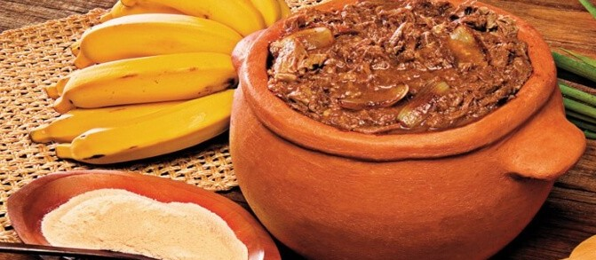
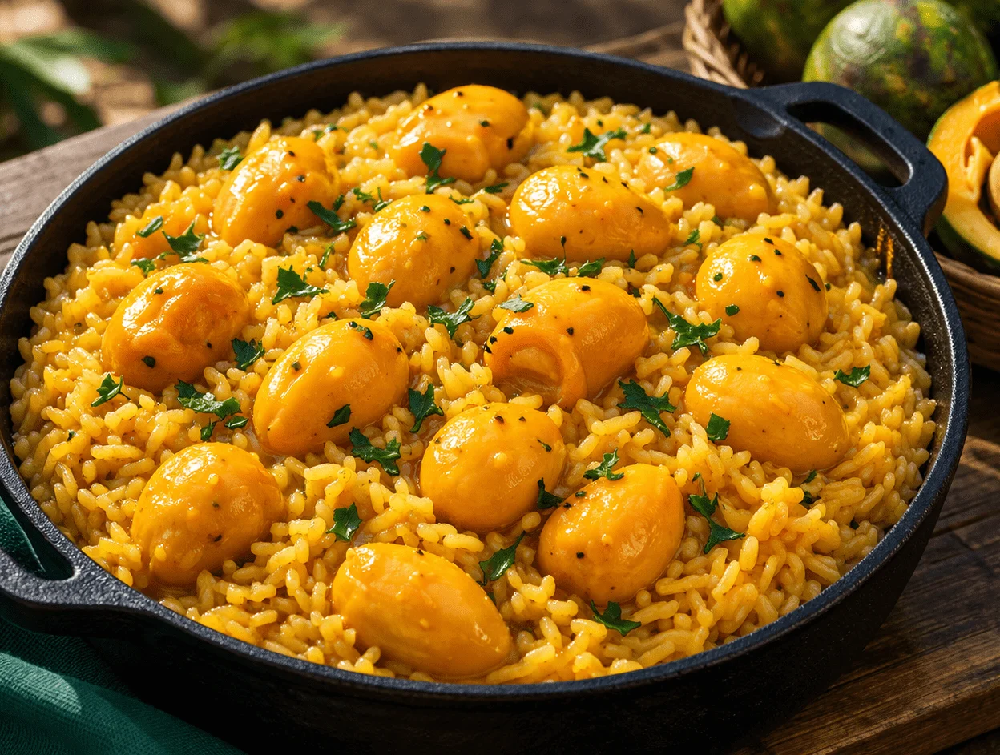
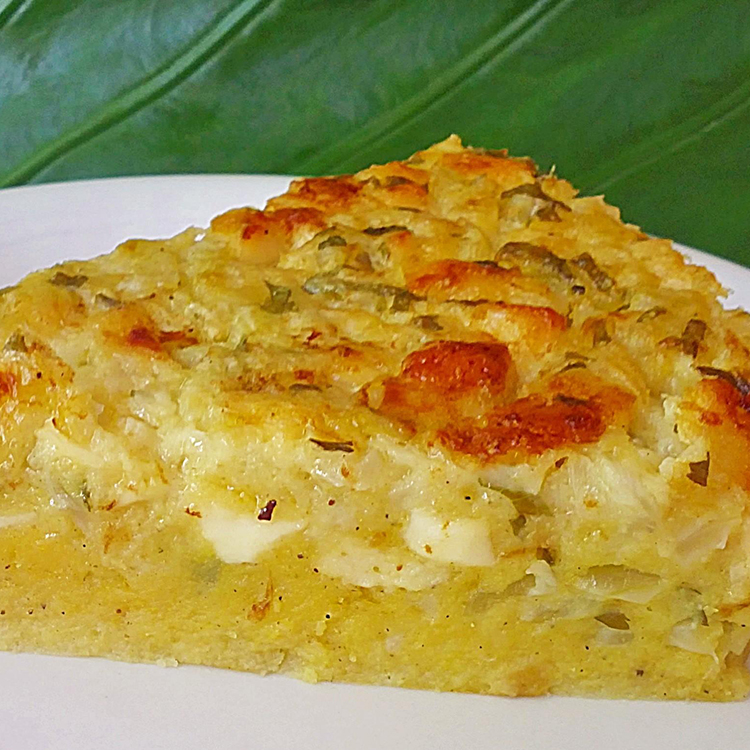

Sul
Barreado
Carne cozida por horas em panela de barro vedada com massa de farinha. Tradição do litoral do Paraná.
Ver perguntasContinue a viagem pelas regiões que faltam e conheça mais três pratos típicos.
Voltar à página 1Página 2: Sul e Centro-Oeste.

Carne cozida por horas em panela de barro vedada com massa de farinha. Tradição do litoral do Paraná.
Ver perguntas
Arroz amarelado pelo pequi, fruto do Cerrado de aroma forte. Atenção: o caroço tem espinhos, não morda!
Mais informações
Apesar do nome, é uma torta salgada de milho, queijo e cebola, muito comum no Mato Grosso do Sul.
Ver destaques